Precise light control for next-generation chip manufacturing
ASML — the world's leading manufacturer of Extreme Ultraviolet (EUV) photolithography machines — challenged our team to design a lens-tilting mechanism capable of directing a focal point with sub-millimeter precision while remaining self-correcting in the face of vibration and thermal change.
Our solution uses three P8-ST micro stepper actuators arranged at 120° intervals beneath a 100mm-wide lens, paired with a radially compliant flexure mount that protects the lens from stress during thermal expansion. An onboard MPU-6050 accelerometer/gyroscope enables real-time self-adjustment.
The core principle — accurate optical tilting with passive stress relief — has broad applications in medical imaging, fiber optics, laser cutting, and high-resolution microscopy.
(required: 1000×)

P8-ST Micro Stepper Actuators

MPU-6050 Accelerometer/Gyroscope
Four integrated subsystems
Optic Mount
A radially compliant support subsystem that holds the lens and manages thermal movement while preserving alignment.
Base & Actuation
Precision actuation and base support that converts motion commands into controlled lens tilt with repeatable alignment.
Inverse Kinematics & Control
A parallel manipulator model translates desired focal point (x, y) coordinates into actuator extensions using trigonometric projection and vector algebra. Modular firmware closes the loop on motion and sensor feedback.
Testing Rig
A T-slot aluminum extrusion frame with custom 3D-printed connectors. Height is adjustable to match the lens focal length exactly. Supports two configurations: lens hanging below the ring (Config 1) or resting above it (Config 2).
Build & Design
Photos and recordings from the physical build, fabrication, and live demonstration.
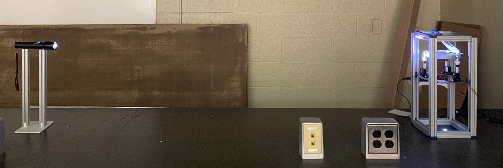
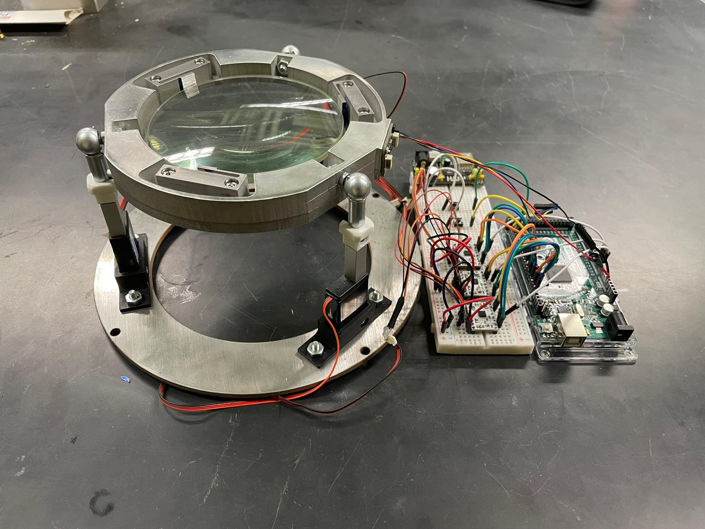
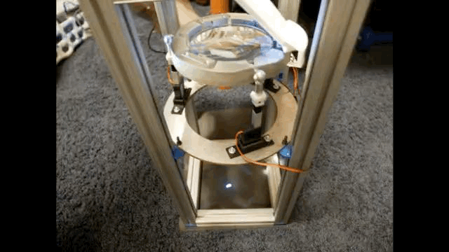
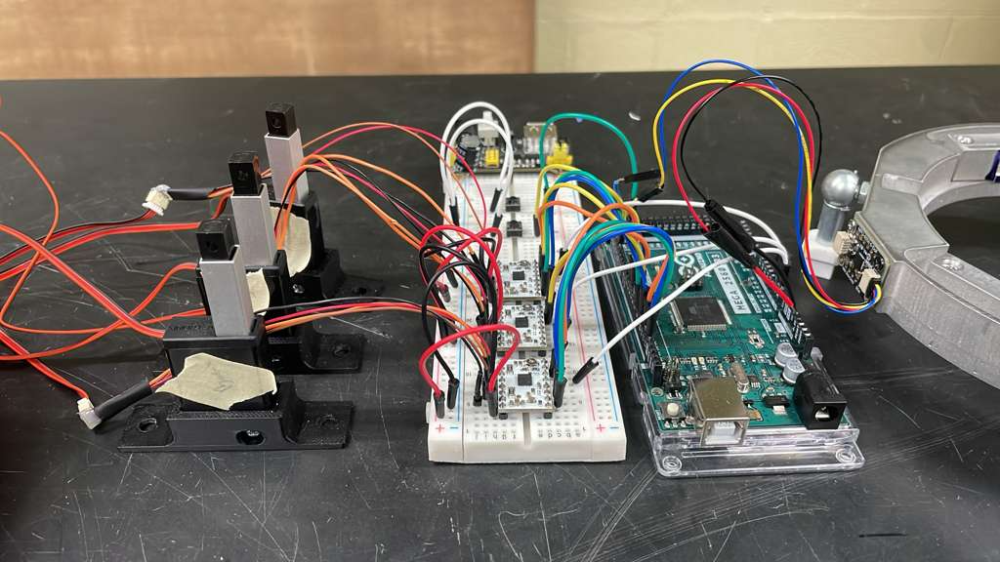
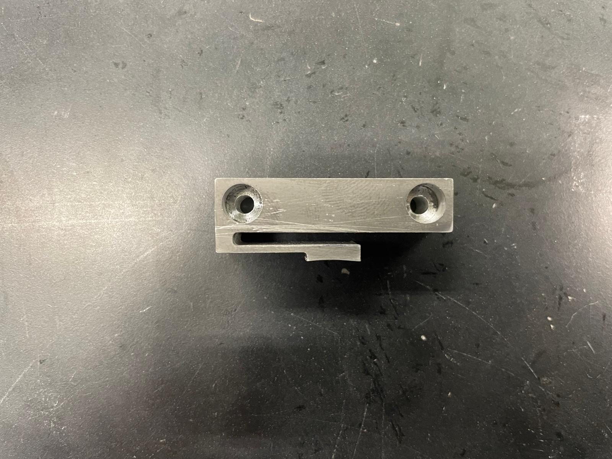
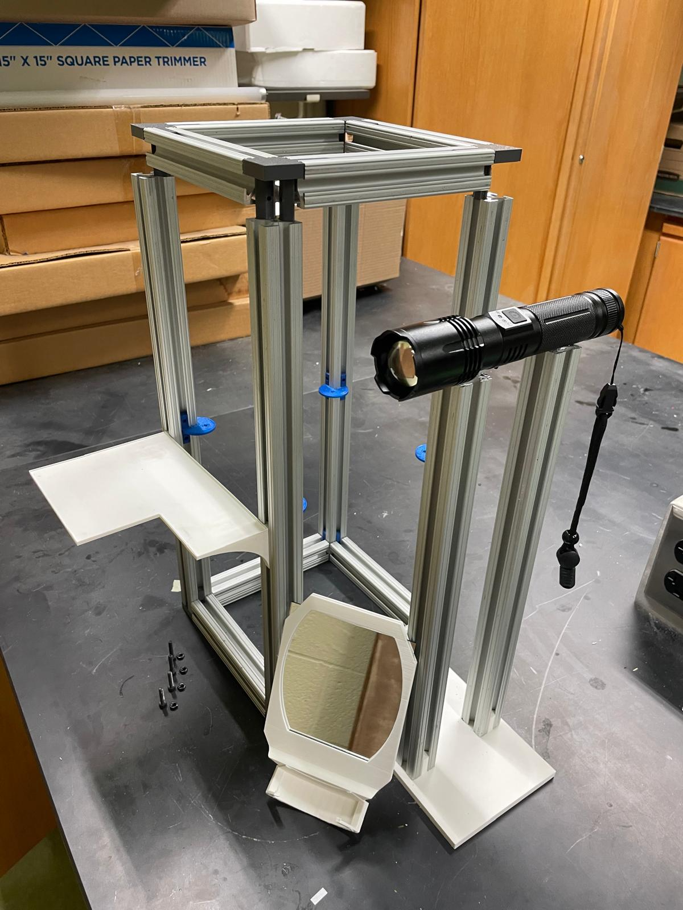
Three designs. One winner.
We evaluated three actuation concepts against eleven weighted engineering criteria before converging on linear actuation.
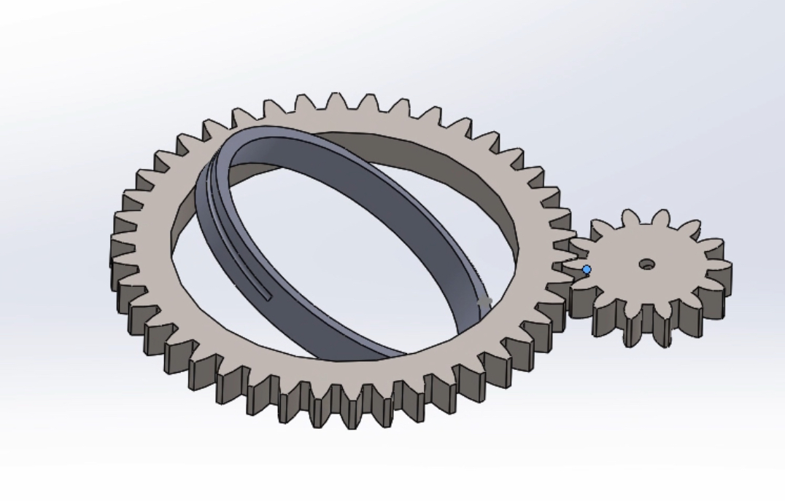
Gyroscope-Shaped
Three concentric rings providing independent rotation on two axes. High accuracy, but complex internal wiring and very difficult assembly made integration impractical. Final score: 134.

Tilt-Track & Rotator
Separates tilt and pitch using a single tilt axis plus full rotation. Eliminated due to external gear space requirements, torque demands, and slow repositioning speed. Final score: 111.
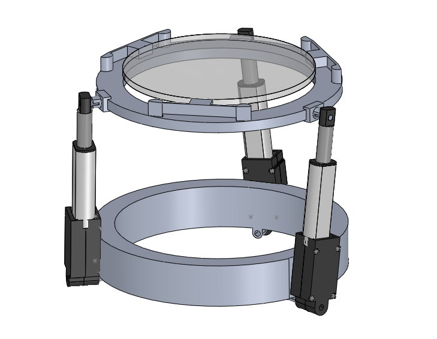
Linear Actuation
Three stepper motors at 120° intervals beneath the lens. Top scores in assembly ease, wiring, and manufacturability. Compact, precise, and holds position without continuous power. Final score: 149.
Redesigned. Purchased. Built.
This semester the team purchased all components, redesigned several subsystems for real-world manufacturability, and assembled the physical prototype.
Optic Mount
A radially compliant mechanism that holds the lens and manages thermal expansion while maintaining alignment.
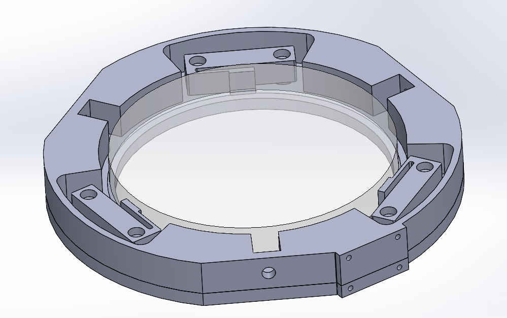
Mounting Ring — Split Design
The single-piece mounting ring was split into two sections for machinability. Screw holes were enlarged for easier assembly, and a connection plane was added on the side to accommodate the accelerometer module.
Radially Compliant Flexure
The original flexure legs were replaced with washer-style contact feet for easier machining. The body was enlarged to accommodate bigger connecting screws, and a lip was added at the bottom face to ensure the lens rests correctly on the mounting ring.
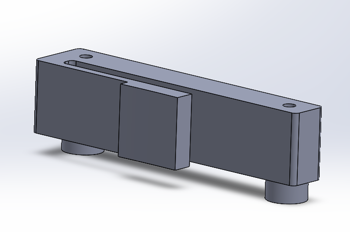
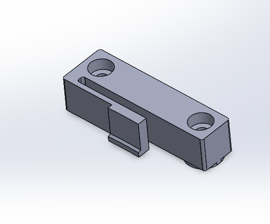
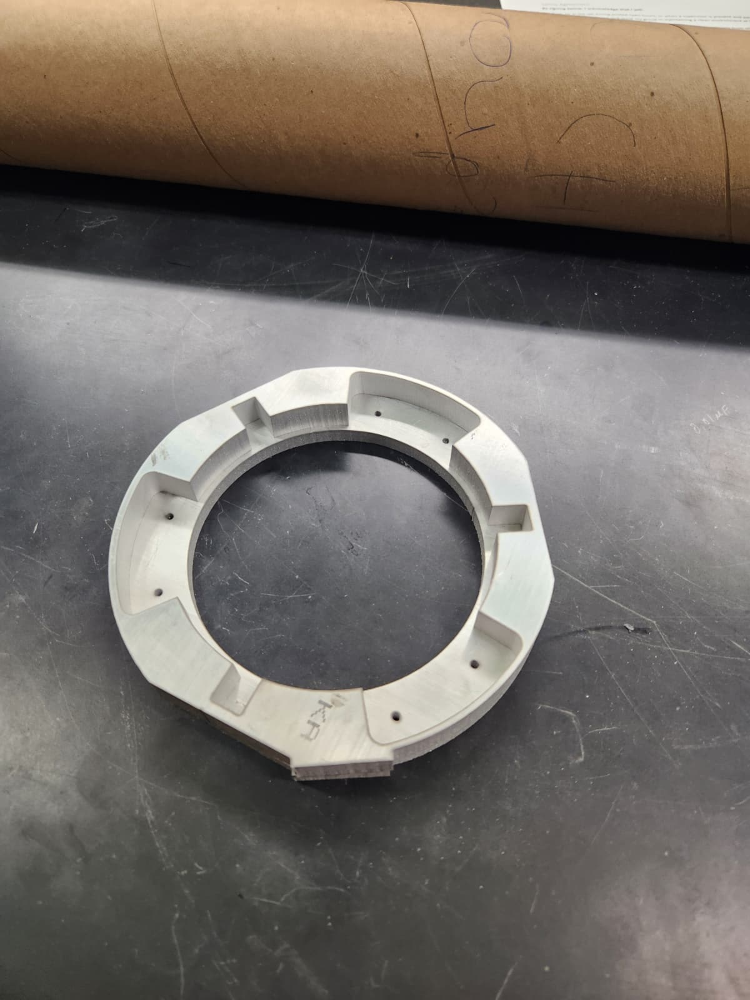
Machined Mounting Ring
The final mounting ring was CNC-machined from aluminum stock. The split design was verified to fit the lens diameter cleanly, with all flexure slots and screw holes matching the CAD model within tolerance.
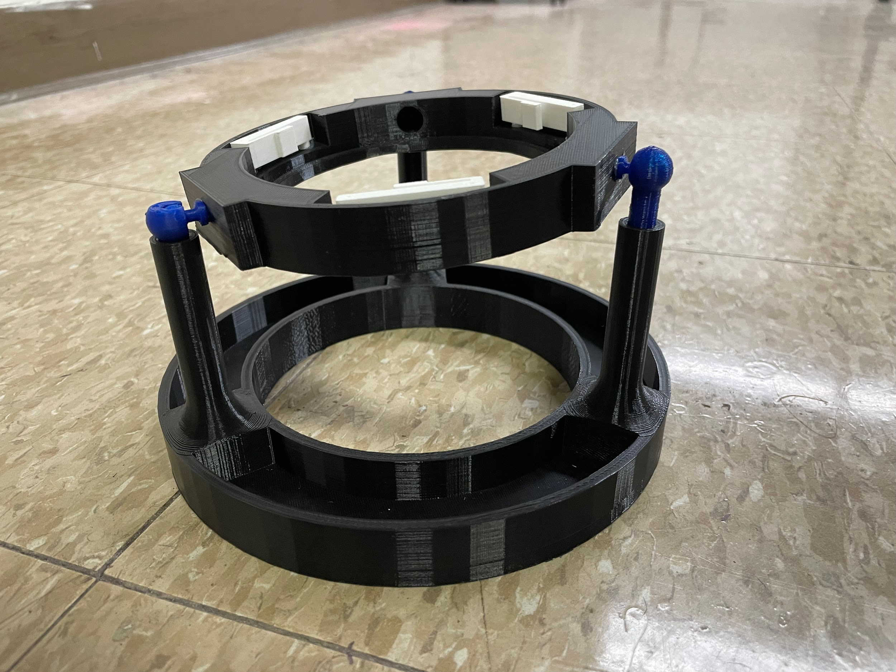
3D-Printed Early Prototype
Before machining, a full-scale 3D-printed prototype was assembled to verify component spacing, actuator travel, and ball-and-socket joint geometry. This iteration confirmed the split ring concept and identified screw hole sizing adjustments needed for the final part.
Base & Actuation
Three P8-ST micro stepper actuators at 120° spacing drive the mounting ring's tilt. A 3D-printed motor holder and aluminum base ring position each actuator precisely, while a ball-and-socket joint converts linear extension into smooth tilt motion.
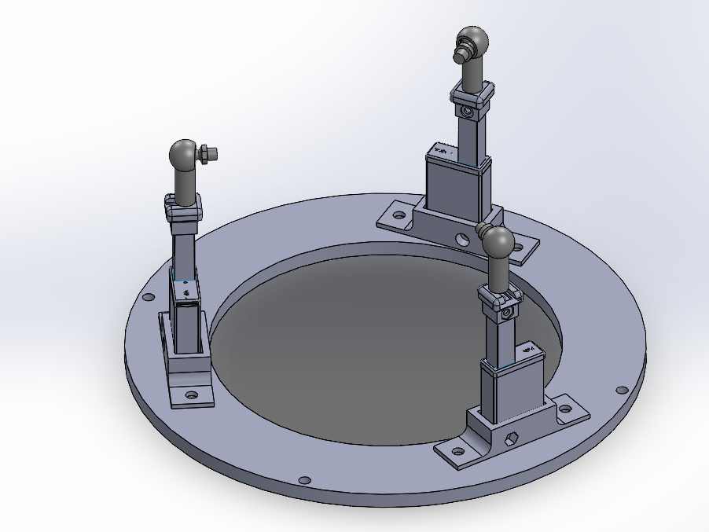
Base Ring & Motor Holders
The aluminum base ring provides structural support for the full assembly. Three 3D-printed motor holders mount to it at exactly 120° intervals, keeping each actuator aligned with the ball-and-socket joint on the mounting ring above.
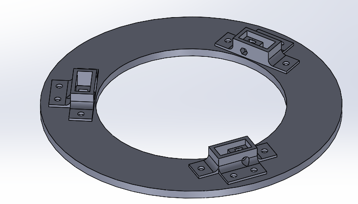
Actuator — P8-ST Micro Stepper
The original NEMA 8 captive stepper could not be sourced due to shipping issues. It was replaced with the P8-ST Micro Stepper Actuator — a 25 mm stroke, 4.2V unit with 0.01 mm step resolution that meets all load and travel requirements.
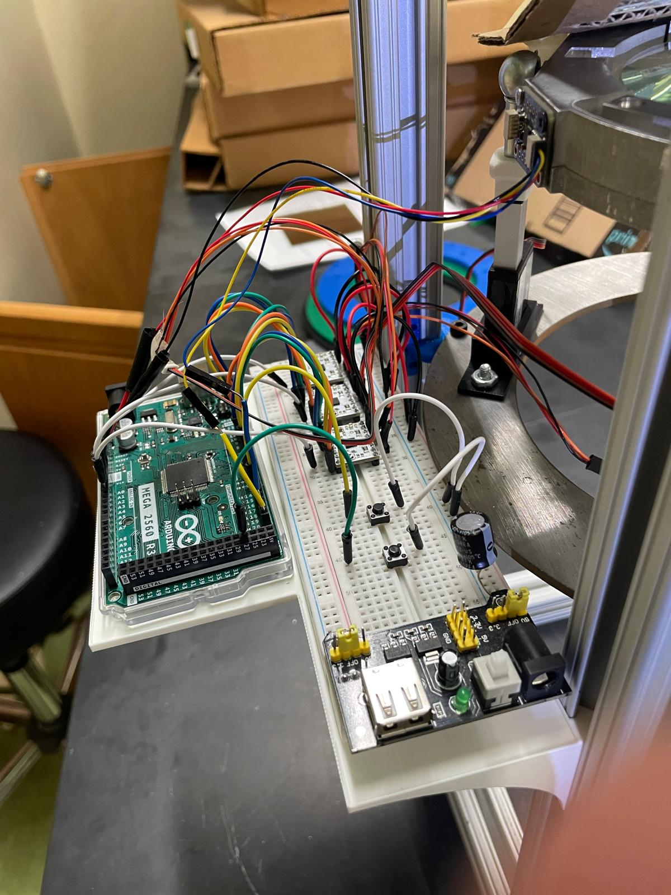
Electronics Stack
Arduino Mega 2560 as the main controller, three DRV8834 stepper motor driver carriers, a STEMMA QT MPU-6050 accelerometer/gyroscope for orientation feedback, and a low-voltage regulated power supply — all wired on a shared breadboard.
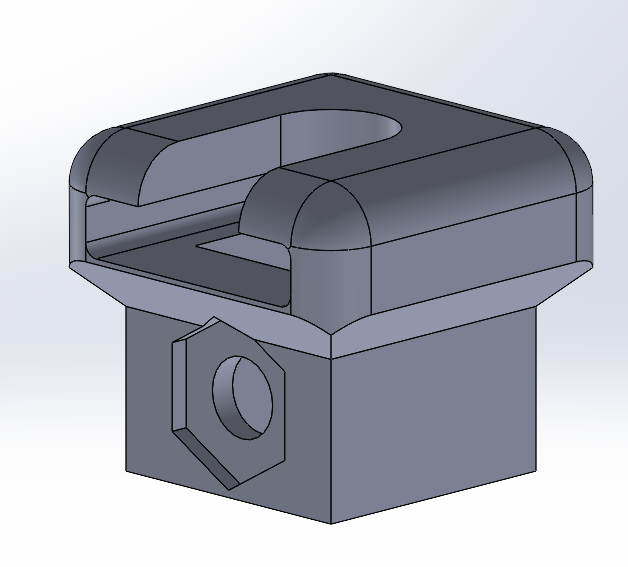
Ball-and-Socket Joint
Each actuator tip connects to the underside of the mounting ring through a 3D-printed ball-and-socket joint. This allows small angular misalignments as the ring tilts, preventing binding and ensuring smooth, repeatable motion across the full ±10° range.
Inverse Kinematics & Control
A parallel manipulator model converts a desired focal point (x, y) into individual actuator extensions using trigonometric projection and vector algebra. Closed-loop feedback from the MPU-6050 IMU corrects orientation drift in real time.
Inverse Kinematics Model
Each of the three actuators sits at a fixed radius from the lens center, spaced 120° apart. Given a desired tilt (θx, θy), the model projects the tilt plane onto each actuator's axis using vector algebra to compute the required linear extension. The result is three independent motor commands issued simultaneously.
Firmware
Arduino Control Loop
Modular firmware on the Arduino Mega 2560 reads quaternion orientation from the MPU-6050 over I²C, computes the angular error relative to the target, applies the inverse kinematics to produce actuator deltas, and steps each DRV8834 driver accordingly — running the full closed loop on every iteration.
Sensor & Driver Integration
The MPU-6050 IMU streams orientation quaternions to the Arduino via I²C. Three DRV8834 carriers independently control microstepping for each P8-ST actuator. A single regulated 5V supply powers all three drivers from a shared rail, keeping the wiring compact and noise-isolated.
Testing Rig
A T-slot aluminum extrusion frame with 3D-printed corner connectors. Height is adjustable to match the lens focal length exactly. Supports two configurations and houses the full assembly for live focal point demonstrations.
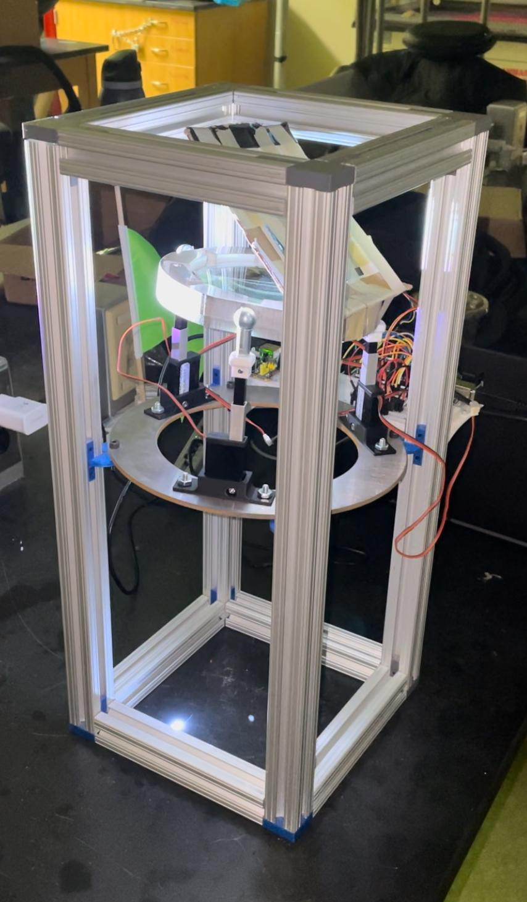
Assembled Rig
The T-slot aluminum extrusion frame holds the complete mechanism — base ring, mounting ring, lens, and electronics — at a fixed height calibrated to the focal length of the chosen lens. 3D-printed corner connectors lock each extrusion joint securely without machining.
Lens Hanging Below Ring
The lens is suspended below the mounting ring, with the light source entering from above. Used for early focal-length calibration and first-pass tilt alignment verification.
Config 2
Lens Resting Above Ring
The lens rests on top of the ring and the light source illuminates from below. Used in the final live demonstration — the focal point is steered upward onto a target screen mounted inside the frame.
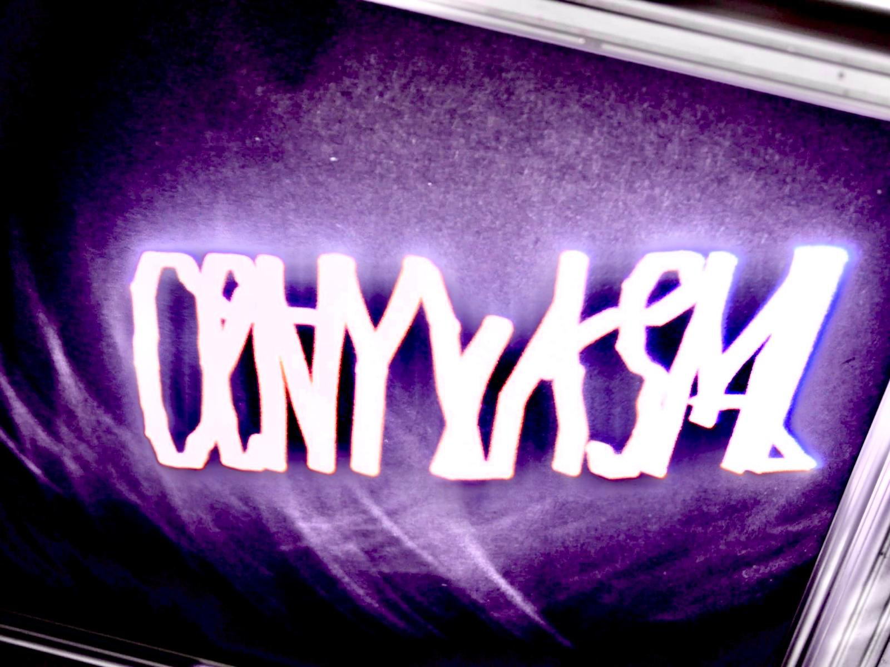
Live Focal Point Demonstration
In the final demonstration, the system projected "CCNY ASML" text through the lens onto a black velvet screen. The mechanism was commanded to steer the projected focal point in real time, confirming closed-loop tilt control across both axes.
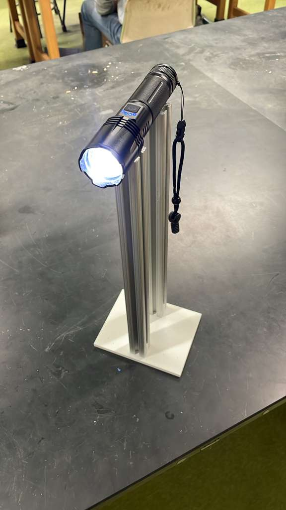
Light Source
A handheld flashlight mounted on a custom 3D-printed aluminum extrusion stand serves as the collimated light source. The stand height is adjustable to center the beam on the lens at each rig configuration, and the flashlight position is repeatably locked for consistent test conditions.
Validated by FEA simulation
All finite element analysis was performed in SolidWorks. Results confirmed the design meets all thermal, fatigue, and stiffness requirements.
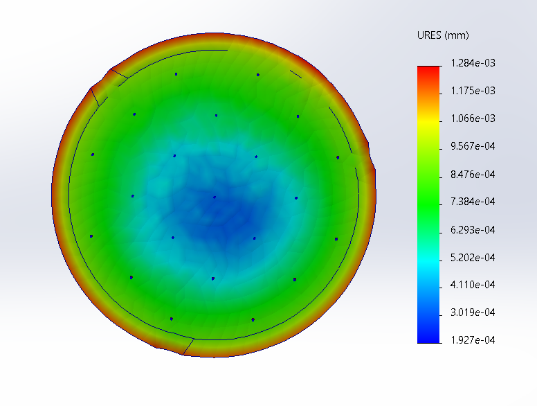
FEA 1 — Thermal Expansion of Lens
A +15°C temperature boundary was applied across all lens faces. The resultant displacement map shows a maximum radial expansion of just 1.28 µm. Peak von Mises stress of 8.5 MPa was observed at contact points — well within the glass yield strength of 35 MPa.
Max displacement: 1.28 µm ✓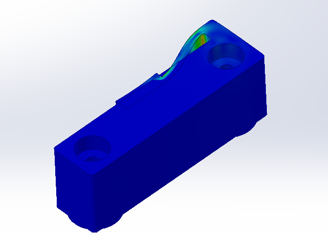
FEA 2 — Flexure Stress Analysis
The 1.28 µm thermal displacement was applied as a prescribed load on the flexure face. A finer mesh was used at the inner notch (the highest-stress region). Max von Mises stress: 6.1 MPa — against a yield strength of 351.6 MPa, giving a factor of safety of 57.6.
Factor of Safety: 57.6 ✓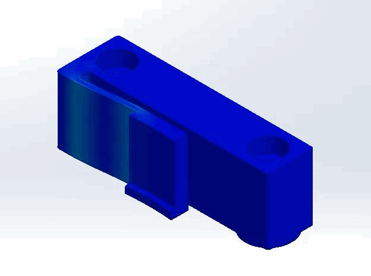
Fatigue Analysis — Infinite Life
Using the Stress-Life method (Shigley's 11th Ed.) with AISI 1020 material properties, the calculated fatigue life under repeated thermal cycling was 2.83 × 10²⁷ cycles. The flexures effectively have infinite life under all expected operating conditions.
Fatigue life: 2.83 × 10²⁷ cycles ✓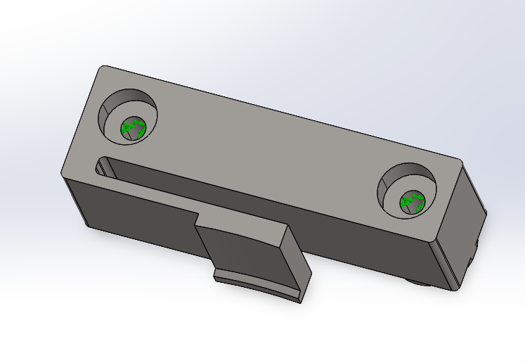
Stiffness Ratio — 1728:1
Cantilever beam theory was used to calculate XY stiffness (2.28 × 10⁵ N/m). A SolidWorks FEA simulation of the mounting ring lip under 100 N load yielded Z stiffness of 3.94 × 10⁸ N/m — a ratio of 1728:1, exceeding the 1000:1 requirement by 72%.
Ratio: 1728:1 (req: 1000:1) ✓Project documentation
Full design reports and slide decks from both semesters of the senior design project.
First Semester Final Report
Comprehensive design documentation and analysis from the first semester.
- Placeholder content
- Edit these bullet points
Second Semester Final Report
Final documentation and results from the second semester of the project.
- Placeholder content
- Edit these bullet points
Design Report & Final Presentation
Complete technical report covering the full design process: literature search, three design concepts, analysis, FEA, component selection, and 3D-printed prototype.
- Background, motivation & problem statement
- Three design concepts with attribute chart evaluation
- Optic mount, flexure, and base design
- FEA: thermal expansion + flexure stress analysis
- Stiffness ratio & fatigue life calculations
- Inverse kinematics & coding architecture
First Semester Mid-Semester Presentation
Mid-semester update and progress review from the first semester.
- Placeholder content
- Edit these bullet points
Mid-Semester Update Presentation
Progress update on component purchasing, subsystem redesigns, electronics, coding structure, and the T-slot testing apparatus.
- Summary of previous semester work
- Actuator reselection: P8-ST Micro Stepper
- Mounting ring split-design redesign
- Flexure and base redesign
- Electronics stack & Arduino coding outline
- T-slot testing rig design & next steps
Final Presentation
Final presentation showcasing the completed project and results.
- Placeholder content
- Edit these bullet points
Built by five mechanical engineers at CCNY
A multidisciplinary senior design team from the City College of New York, working in partnership with ASML to solve a real-world precision engineering challenge.